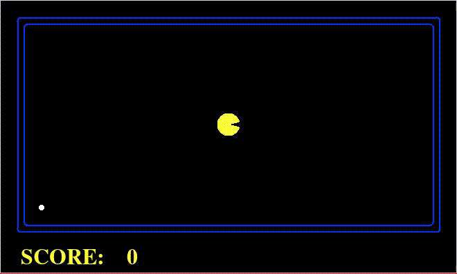
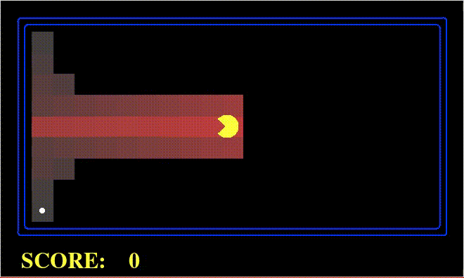
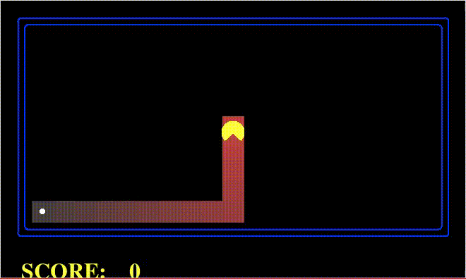
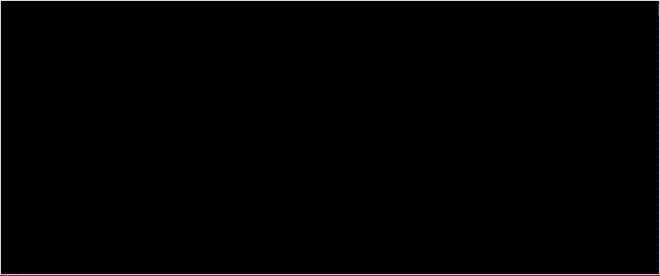

Busca de Caminhos - PAC-MAN - Relatório de Resultados
Grupo:
- Guilherme Souza,
- Jonathas Conceição,
- Mateus Schmalfuss.
Algoritmos
Quatro algoritmos foram implementados para busca de caminho no jogo do PAC-MAN:
Os Gifs neste relatório apresentam mostram (1) o PAC-MAN, (2) o estado final (representado pela comida), (3) o labirinto que ele deve resolver, (4) e os estados explorados. Estados explorados são marcados em vermelho, sendo os primeiros a serem explorados de um tom mais forte, e os últimos um tom mais leve. Nos Gifs o PAC-MAN percorre o caminho que encontrei para atingir o estado final.
Ao fim são apresentados resultados e comparação entre os algoritmos e labirintos extras implementados para testes.
A Estrela
O A* é um algoritmo de busca informada que pode ser aplicado em grafos ponderados. Partindo de um nodo inicial do grafo, tem-se como objetivo encontrar o caminho de menor custo até um nodo objetivo. Ele executa mantendo uma árvore de caminhos originados do nodo inicial e passando pelas arestas até que o nodo final seja atingido.
O Gif 1 mostra uma busca em A* executada usando uma heurística de Distância Manhattan, como há um caminho direto, o PAC-MAN encontra o estado final sem precisar explorar estados adicionais.

Gif 1: Exemplo da busca A*
Custo Uniforme
A busca em Custo Uniforme, também chamada de algoritmo de Dijkstra, é usado para encontrar a menor distância entre dois nodos em um grafo ponderado. No jogo do PAC-MAN pode-se aplicar peso às arestas e usar a busca em Custo Uniforme para fazer o PAC-MAN priorizar caminho em uma direção.
O Gif 2 mostra uma busca de Custo Uniforme executada usando pesos que priorizam a ida para esquerda. Um caminho direto para esquerda é o primeiro a ser considerado, ao atingir uma parede, alternativas com mais uma curva para cima ou para baixo passa a ser consideradas, o PAC-MAN eventualmente encontra o estado final e executa o percurso.

Gif 2: Exemplo da busca em Custo Uniforme
Têmpera Simulada
O Têmpera Simulada é uma técnica de busca com melhora iterativa probabilística, similar à subida de encosta. Ele parte de um estado inicial com uma "temperatura" inicial alta e substitui a solução atual por uma solução vizinha no espaço de estados com uma probabilidade de aceitar soluções não ótimas baseadas na temperatura, que diminui a cada iteração. Dessa forma aos poucos ele tende a aceitar cada vez menos soluções piores do que a atual e converge a um estado global ótimo.
Gif 3: Exemplo da busca usando Tempera Simulada
Subida de Encosta
A Subida de Encosta é um algoritmo de busca com melhoria iterativa. A ideia é começar com um estado inicial e melhora-lo iterativamente, a altura de qualquer ponto da superfície corresponde a função de avaliação do estado naquele ponto. O algoritmo se "move" pela superfície buscando pontos mais altos/baixos o Subida de Encosta se move em valor crescente (encosta a cima), terminando quando alcançar seu pico máximo ou seja nem um vizinho será mais alto que o ponto atual (nem um vizinho tem valor mais alto), não havendo necessidade de armazenar a arvore inteira, guardando somente o estado atual, para que possa tentar melhora-lo e seguir a procura pelo de maior pico.
O Gif 4 demonstra a busca com melhoria iterativa utilizando o algoritmo subida de encosta. Procura a superfície de maior altura (maior valor), seguindo em direção na ordem das mesmas. Por buscar sempre o pico mais alto muitas vezes dependendo das suas escolhas pode por acabar preso em uma superfície a qual não contem um descendente maior, dessa forma finalizando a busca na maior superfície encontrada pelo algoritmo.

Gif 4: Exemplo da busca em Custo Uniforme
Resultados e Comparação
Para comparação dos algoritmos a execução em dois labirintos diferentes foi considerada. As tabelas apresentam o desempenho dos quatro algoritmos para os labirintos em questão. Como o Têmpera Simulada tem uma fator probabilístico, a tabela apresa resultados da média de 30 execuções. Os gifs apresentam uma execução de cada algoritmo na mesma ordem da tabela.
No Labirinto Médio 3 o A* foi usado com a heurística de Distância Manhattan, a Custo Uniforme com pesos que favorecem a ida para esquerda. Pode-se observar que, (1) como há uma parede separando o caminho reto do PAC-MAN à comida, o algoritmo A* usando a Distância Manhattan resulta numa resposta sub-ótima; (2) Com os pesos usados no Custo Uniforme, é possível encontrar a melhor resposta, além de gastar menos esforço computacional; (3) a Têmpera Simulada usando heurística de pesos iguais, por conta da aleatoriedade do algoritmo gera resultados inferiores, mas sempre encontra a resposta final; (4) a Subida de Encosta, por sua vez, usando uma heurística de Distância Manhattan, falha ao encontrar a resposta final, não gerando uma pontuação final.
Gif 5: Execuções no Labirinto Médio 3
Tabela 1: Comparação no Labirinto Médio 3
| Algoritmo | Qnt. Estados | Pontuação |
|---|---|---|
| A* | 76 | 470 |
| Custo Uniforme | 64 | 474 |
| Têmpera Simulada | 98.26 | 453.86 |
| Subida de Encosta | 23 | - |
Já no Labirinto Pequeno 3, o A* e o Têmpera Simulada foram usados com a heurística de Distância Euclidiana, o Custo Uniforme com pesos que favorecem a ida para esquerda e o Subida de Encosta com pesos iguais para todos os nodos. Pode-se observar que, (1) o A* e o Custo Uniforme exploram todos os estados possíveis, mas encontram a resposta ótima; (2) a Têmpera Simulada varia entre explorar 48 e 39 estados, mas sempre encontra resposta ótima; (3) a Subida de Encosta, por fim, encontrou a resposta final sem se perder em caminhos secundários, encontrado a resposta ótima com menos esforço computacional.

Gif 6: Execuções no Labirinto Pequeno 3
Tabela 2: Comparação no Labirinto Pequeno 3
| Algoritmo | Qnt. Estados | Pontuação |
|---|---|---|
| A* | 48 | 471 |
| Custo Uniforme | 48 | 471 |
| Têmpera Simulada | 43.2 | 471 |
| Subida de Encosta | 39 | 471 |
Assim como pode ser observado pelos experimentos relatados aqui, a escolha não só do algoritmo, mas também da heurística, devem levar em consideração o problema a ser tratado, para que assim se possa encontrar a resposta ótima com menor esforço computacional.
Labirintos Extras
Para este trabalho foram desenvolvidos mais mapas além dos default para testes situacionais dos algoritmos. Seguindo os mesmos padrões já existentes, mapas Small, Mediun e Big, em alguns dos mapas foi proporcionado mais caminhos para vitoria, porém alguns com uma distancia um pouco menor ou seja uma solução a primeira vista melhor, para poder se analisar como os algoritmos explorariam o mapa e qual seria a decisão tomada pelo mesmo. Outros proporcionam um mapa um tanto quanto bagunçado com uma ou no máximo duas possibilidades de vitoria, porém com percursos maiores e mais "complicados" para se chegar a uma escolha (uma escolha a qual não se baseia somente na vitória e sim qual caminho aparentemente seria o melhor a seguir). Tais mapas nos proporcionaram uma melhor comparação entre os algoritmos aqui aplicados, pois cada algoritmo demonstra um comportamento diferente em mapas iguais (o que é correto), com a construção de novos labirintos tornou-se possível um o qual o caminhos tomado por todo é o mesmo, porem cada um explorando e seguindo sua ideia de busca.
Figura 1: Labirinto pequeno 1.
Figura 2: Labirinto pequeno 2.
Figura 3: Labirinto pequeno 3.
Figura 4: Labirinto pequeno 4.
Figura 5: Labirinto pequeno 5.
Figura 6: Labirinto médio 1.
Figura 7: Labirinto médio 2.
Figura 8: Labirinto médio 3.
Figura 9: Labirinto médio 4.
Figura 10: Labirinto grande 1.
Figura 11: Labirinto grande 2.
Figura 12: Labirinto grande 3.
Figura 13: Labirinto grande 4.